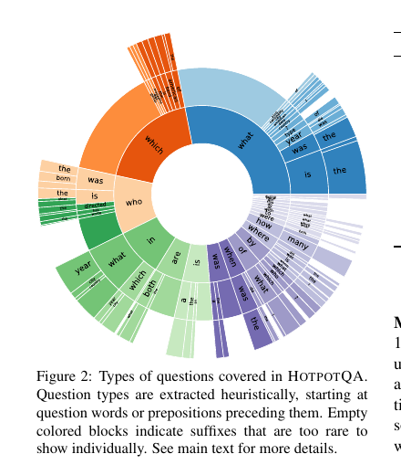
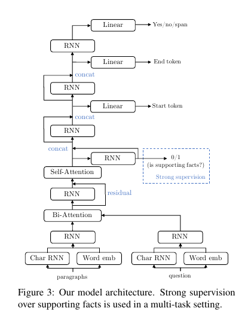
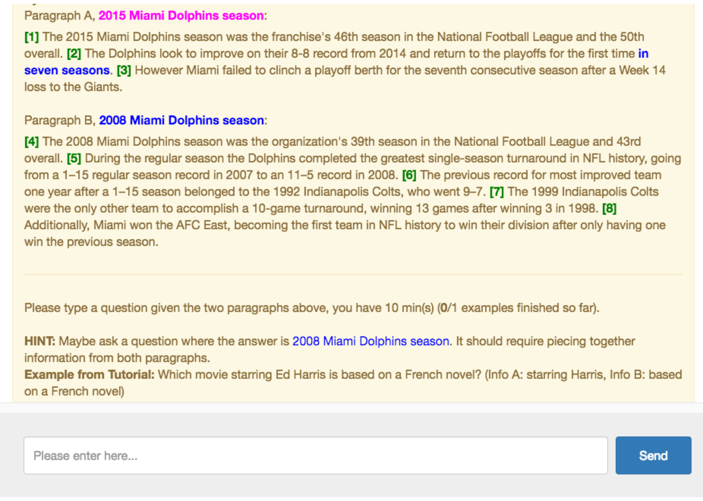
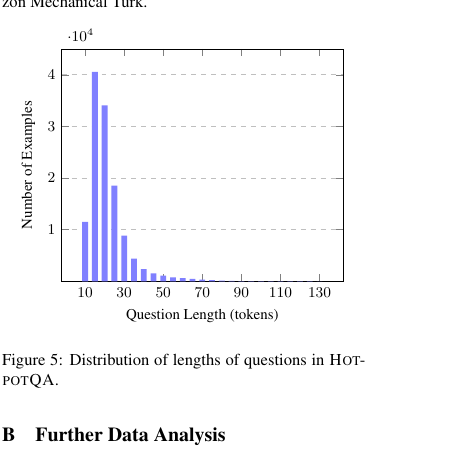

HOTPOTQA：一个面向多样、可解释多跳问答的数据集
♠ Carnegie Mellon University ♥ Stanford University ♣ Mila, Université de Montréal ♦ CIFAR Senior Fellow † Google AI
{zhiliny, rsalakhu}@cs.cmu.edu, {pengqi, manning}@cs.stanford.edu, saizheng.zhang@umontreal.ca, yoshua.bengio@gmail.com, wcohen@google.com
译者说明
本文件根据本地 PDF 全文抽取后翻译生成。数据集名、模型名、引用名、变量名、划分名和 URL 保留原文；正文、图表标题、算法说明和附录内容翻译为中文。公式使用 HTML 原生 MathML 表示，表格使用 HTML 表格重建，图 2、图 3、图 5 保留原论文裁剪图，图 4 使用从 PDF 抽出的原始图片资源。
摘要
现有问答（QA）数据集无法训练 QA 系统执行复杂推理，也无法为答案提供解释。我们提出 HOTPOTQA，这是一个新的数据集，包含 11.3 万个基于维基百科的问题-答案对，并具有四个关键特征：（1）问题需要寻找多个支撑文档并在其上进行推理才能回答；（2）问题多样，不受任何既有知识库或知识模式约束；（3）我们提供推理所需的句子级支撑事实，使 QA 系统能够通过强监督进行推理并解释预测；（4）我们提供一种新的事实型比较问题，用于测试 QA 系统抽取相关事实并执行必要比较的能力。我们表明，HOTPOTQA 对最新 QA 系统仍然具有挑战性，并且支撑事实能够帮助模型提升性能、做出可解释预测。
目录
1 引言
在自然语言上执行推理与演绎的能力，是智能的重要方面。问答（QA）任务提供了一种可量化、客观的方式，用来测试智能系统的推理能力。为此，已有若干大规模 QA 数据集被提出，并推动了该方向的显著进展。然而，现有数据集存在一些限制，阻碍了自然语言机器推理的进一步发展，尤其是在测试 QA 系统执行多跳推理的能力方面。所谓多跳推理，是指系统必须结合来自多个文档的信息进行推理，才能得到答案。
第一，一些数据集主要聚焦于测试在单个段落或文档内推理的能力，也就是单跳推理。例如，在 SQuAD（Rajpurkar et al., 2016）中，问题被设计为在给定单个段落作为上下文时即可回答，并且大多数问题实际上都可以通过将问题与该段落中的某个单句匹配来回答。因此，它不足以测试系统在更大上下文上进行推理的能力。TriviaQA（Joshi et al., 2017）和 SearchQA（Dunn et al., 2017）使用信息检索，为已有问题-答案对收集多个文档组成上下文，从而构造了更具挑战性的设置。不过，大多数问题仍可通过将问题与单个段落中相邻的几句话匹配来回答，这种设置仍然有限，因为它不需要更复杂的推理，例如跨多个段落的推理。
第二，现有面向多跳推理的数据集，例如 QAngaroo（Welbl et al., 2018）和 COMPLEXWEBQUESTIONS（Talmor and Berant, 2018），是使用已有知识库（KB）构造的。因此，这些数据集受到所使用知识库模式的约束，问题与答案的多样性也因此具有内在限制。
第三，上述所有数据集都只提供远程监督；也就是说，系统只知道答案是什么，却不知道哪些支撑事实导向了该答案。这使模型很难学习底层推理过程，也很难做出可解释的预测。
为解决这些挑战，我们希望创建一个 QA 数据集，它要求在多个文档上进行推理，并且这种推理发生在自然语言中，而不是受已有知识库或知识模式限制。我们还希望该数据集能向系统提供强监督，说明答案实际上源自哪些文本，从而帮助系统进行有意义且可解释的推理。
我们提出 HOTPOTQA1，这是一个满足上述需求的大规模数据集。HOTPOTQA 基于维基百科文章，通过众包方式收集：众包工作者会看到多个支撑上下文文档，并被明确要求提出需要对所有文档进行推理的问题。这保证了它覆盖更自然的多跳问题，而不是围绕任何既有知识库模式设计的问题。此外，我们还要求众包工作者提供他们用于回答问题的支撑事实，并将这些支撑事实作为数据集的一部分提供（示例见图 1）。由于高质量多跳问题的收集并不容易，我们为 HOTPOTQA 精心设计了一条数据收集流水线。我们希望这条流水线也能启发未来相关工作。最后，我们还收集了一种新型问题：比较问题。这类问题要求系统比较两个实体在某些共享属性上的差异，用于测试其对语言和数值大小等常识概念的理解。我们将 HOTPOTQA 公开发布在 https://HotpotQA.github.io。
图 1：HOTPOTQA 中多跳问题示例
段落 A，Return to Olympus：
[1] Return to Olympus 是另类摇滚乐队 Malfunkshun 的唯一专辑。 [2] 它是在乐队解散之后、主唱 Andrew Wood（后来加入 Mother Love Bone）于 1990 年死于药物过量之后发行的。 [3] Pearl Jam 的 Stone Gossard 整理了这些歌曲，并通过自己的厂牌 Loosegroove Records 发行了这张专辑。
段落 B，Mother Love Bone：
[4] Mother Love Bone 是一支美国摇滚乐队，1987 年成立于华盛顿州西雅图。 [5] 该乐队活跃于 1987 年至 1990 年。 [6] 主唱 Andrew Wood 的个性与作品帮助该乐队跻身 1980 年代末、1990 年代初正在兴起的西雅图音乐场景前列。 [7] Wood 在乐队首张专辑《Apple》计划发行前几天去世，从而终结了该乐队成功的希望。 [8] 这张专辑最终在几个月后发行。
问：Mother Love Bone 中那位在《Apple》发行前不久去世的成员，此前所在的乐队是什么？
答：Malfunkshun
支撑事实：1、2、4、6、7
图注：蓝色斜体在原文中标出支撑事实，它们也是数据集的一部分。
- 该名称来自前三位作者在一家火锅餐厅讨论时形成主要想法。作者顺序通过掷骰子决定。
- WWC 在 CMU 任职期间完成了相关工作。
2 数据收集
我们的主要目标是收集一个多样、可解释，并且需要多跳推理的问答数据集。一种做法是基于知识库定义推理链（Welbl et al., 2018; Talmor and Berant, 2018）。然而，这样得到的数据集会受到实体关系不完整以及问题类型不够多样的限制。相反，在本文中，我们关注基于文本的问答，以增加问题与答案的多样性。总体设置是：给定若干上下文段落（例如几个段落，或整个 Web）和一个问题，QA 系统通过从上下文中抽取一个文本片段来回答问题，这与 Rajpurkar et al.（2016）类似。我们进一步确保，必须执行多跳推理才能正确回答问题。
收集基于文本的多跳问题并不简单。在试点研究中，我们发现，只是给众包工作者任意一组段落，反而会适得其反，因为对于大多数段落集合，很难提出有意义的多跳问题。为解决这一挑战，我们精心设计了一条流水线来收集基于文本的多跳问题。下面我们重点介绍流水线中的关键设计选择。
构建维基百科超链接图
我们使用完整英文维基百科转储作为语料2。在该语料中，我们有两个观察：（1）维基百科文章中的超链接通常自然地蕴含上下文中两个（已经消歧的）实体之间的关系，这可能用于促进多跳推理；（2）每篇文章的第一段通常包含大量可以被有意义查询的信息。基于这些观察，我们从所有维基百科文章的第一段中抽取所有超链接。利用这些超链接，我们构建一个有向图 G，其中每条边 (a, b) 表示文章 a 的第一段中有一个指向文章 b 的超链接。
生成候选段落对
为了使用 G 生成适合多跳问答的有意义段落对，我们从一个示例问题出发：“Radiohead 的 singer and songwriter 出生于何时？”要回答这个问题，需要先推理出 “Radiohead 的 singer and songwriter” 是 “Thom Yorke”，然后再在文本中找出他的生日。在这个例子中，我们称 “Thom Yorke” 为桥接实体。给定超链接图 G 中的一条边 (a, b)，实体 b 通常可以被视为连接 a 与 b 的桥接实体。我们观察到，文章 b 通常决定了 a 与 b 共享上下文的主题，但并非所有文章 b 都适合收集多跳问题。例如，国家等实体在维基百科中经常被引用，但不一定与所有入链都有很多共同点。同样，对于 IPv4 协议这类高度技术性的实体，众包工作者也很难提出有意义的多跳问题。为缓解该问题，我们将桥接实体限制在一组人工筛选过的维基百科页面中（见附录 A）。在筛选出页面集合 B 后，我们通过从超链接图中采样满足 b ∈ B 的边 (a, b) 来创建候选段落对。
比较问题
除了使用桥接实体收集的问题，我们还收集另一类多跳问题：比较问题。其核心思想是，比较同一类别中的两个实体通常会产生有趣的多跳问题，例如：“Michael Jordan 和 Kobe Bryant 谁效力过更多 NBA 球队？”为了促进收集这类问题，我们从维基百科中人工筛选出 42 个相似实体列表（记为 L）3。为生成候选段落对，我们从同一列表中随机采样两个段落，并将其呈现给众包工作者。
为了增加多跳问题的多样性，我们还在比较问题中引入了一部分 yes/no 问题。这通过提供新的提问方式，补充了比较问题的原有范围，使系统必须在两个段落上推理。例如，考虑实体 Iron Maiden（来自英国）和 AC/DC（来自澳大利亚）。像 “Iron Maiden 还是 AC/DC 来自英国？” 这样的问题并不理想，因为即便只访问其中一篇文章，也能推断答案是 “Iron Maiden”。借助 yes/no 问题，可以提出 “Iron Maiden 和 AC/DC 来自同一个国家吗？” 这需要对两个段落都进行推理。
据我们所知，基于文本的比较问题是一种此前数据集未考虑过的新型问题。更重要的是，回答这些问题通常需要算术比较，例如根据出生日期比较年龄，这为未来模型开发提出了新的挑战。
收集支撑事实
为了增强问答系统的可解释性，我们希望系统在生成答案时，也输出得到答案所必需的一组支撑事实。为此，我们还向众包工作者收集决定答案的句子。这些支撑事实可以作为强监督，指示模型应关注哪些句子。此外，我们现在还可以通过将预测出的支撑事实与真实支撑事实进行比较，测试模型的可解释性。
数据收集的整体过程如算法 1 所示。
输入：问题类型比例 r1 = 0.75，yes/no 比例 r2 = 0.5
while 尚未完成 do
if random() < r1 then
从 B 中均匀采样一个实体 b
均匀采样一条边 (a, b)
工作者根据段落 a 和 b 提问
else
从 L 中采样一个列表，采样概率按列表大小加权
从该列表中均匀采样两个实体 (a, b)
if random() < r2 then
工作者提出一个 yes/no 问题来比较 a 和 b
else
工作者提出一个以文本片段为答案的问题来比较 a 和 b
end if
end if
工作者提供支撑事实
end while
- https://dumps.wikimedia.org/
- 这是通过人工筛选维基百科 “List of lists of lists”（https://wiki.sh/y8qv）中的列表完成的。一个例子是 “Highest Mountains on Earth”。
3 处理与基准设置
我们通过 Amazon Mechanical Turk4 使用 ParlAI 接口（Miller et al., 2017）（见附录 A）共收集了 112,779 个有效样例。为了从目标多跳问题中隔离潜在单跳问题，我们首先划分出一个名为 train-easy 的数据子集。具体而言，我们从贡献最多的 Turker 中随机抽样问题（每位 Turker 约 3 到 10 个），如果样本中压倒性比例的问题只需要对其中一个段落进行推理，则将该 Turker 的所有问题归入 train-easy。我们抽样这些 Turker，是因为他们贡献了超过 70% 的数据。该 train-easy 集包含 18,089 个大多为单跳的样例。
我们基于当前最先进架构实现了一个问答模型，该模型将在第 5.1 节中详细讨论。基于该模型，我们对剩余多跳样例进行了三折交叉验证。在这些样例中，模型能够以高置信度（通过对模型损失设阈值确定）正确回答 60% 的问题。这些正确回答的问题（共 56,814 个，占多跳样例的 60%）被划分出来，并标记为 train-medium 子集，它也会作为训练集的一部分使用。
划分出 train-easy 和 train-medium 之后，剩下的是困难样例。由于我们的最终目标是解决多跳问答，因此我们关注最新建模技术尚不能回答的问题。因此，我们将开发集和测试集限制为困难样例。具体而言，我们将困难样例随机分为四个子集：train-hard、dev、test-distractor 和 test-fullwiki。数据划分统计见表 1。在第 5 节中，我们会表明，将 train-easy、train-medium 和 train-hard 合并训练模型会得到最佳性能，因此我们将合并集作为默认训练集。两个测试集 test-distractor 和 test-fullwiki 用于两个不同的基准设置，下面介绍。
| 名称 | 描述 | 用途 | 样例数 |
|---|---|---|---|
| train-easy | 单跳 | 训练 | 18,089 |
| train-medium | 多跳 | 训练 | 56,814 |
| train-hard | 困难多跳 | 训练 | 15,661 |
| dev | 困难多跳 | 开发集 | 7,405 |
| test-distractor | 困难多跳 | 测试 | 7,405 |
| test-fullwiki | 困难多跳 | 测试 | 7,405 |
| 总计 | 112,779 | ||
我们创建两个基准设置。第一个设置用于挑战模型在存在噪声时找到真实支撑事实的能力。对于每个样例，我们使用问题作为查询，采用 bigram tf-idf（Chen et al., 2017）从维基百科中检索 8 个段落作为干扰段落。我们将它们与 2 个黄金段落（用于收集问题与答案的段落）混合，构成干扰设置。在输入模型之前，2 个黄金段落和 8 个干扰段落会被打乱。第二个设置通过要求模型在没有指定黄金段落的情况下，根据所有维基百科文章的第一段回答问题，全面测试模型定位相关事实以及围绕这些事实推理的能力。这一全维基设置真正测试系统在真实场景中执行多跳推理的能力5。这两个设置呈现不同难度层级，需要从阅读理解到信息检索的一系列技术。如表 1 所示，我们为两个设置使用不同测试集以避免信息泄露，因为在干扰设置中黄金段落可供模型访问，但在全维基设置中不应可访问。
我们还尝试理解模型在 train-medium 划分上表现较好的原因。人工分析显示，train-medium 中多跳问题的比例与困难样例相近（train-medium 为 93.3%，dev 为 92.0%），但与困难划分相比，有一种问题类型在 train-medium 中出现更频繁（Type II：train-medium 中为 32.0%，dev 中为 15.0%；Type II 定义见第 4 节）。这些观察说明，在训练数据充足时，现有神经架构可以被训练来回答某些类型和某些子集的多跳问题。然而，当不只给出黄金段落时，train-medium 仍然具有挑战性。我们在附录 C 中展示，在这些样例上的检索问题与它们的困难同类样例一样困难。
- https://www.mturk.com/
- 由于我们要求众包工作者在问题中使用完整实体名，全维基设置中的大多数问题并不含糊。
4 数据集分析
本节分析数据集中覆盖的问题类型、答案类型以及多跳推理类型。
问题类型
我们以启发式方式为每个收集到的问题识别问题类型。为识别问题类型，我们首先定位问题中的中心疑问词（central question word，CQW）。由于 HOTPOTQA 包含比较问题和 yes/no 问题，我们将 WH 词、系动词（“is”“are”）以及助动词（“does”“did”）视作疑问词。因为问题经常包含以 WH 词开头的关系从句，我们将 CQW 定义为：如果某个疑问词出现在问题前三个 token 中，则取第一个疑问词；否则取最后一个疑问词。随后，我们通过抽取 CQW 右侧最多 2 个 token 的词来确定问题类型；如果左侧 token 是若干常见介词之一，也一并包含，例如 “in which” 和 “by whom”。
我们在图 2 中可视化了问题类型分布，并标注了超过 250 个问题共享的问题类型。如图所示，我们的数据集覆盖了围绕实体、地点、事件、日期和数字的多种问题，也包括用于比较两个实体的 yes/no 问题（“Are both A and B ...?”），等等。

答案类型
我们进一步从数据集中抽样 100 个样例，并在表 2 中展示答案类型。可以看到，HOTPOTQA 覆盖了广泛的答案类型，这与我们对问题类型的初步分析一致。我们发现，大多数问题围绕文章中的实体（68%），也有不可忽略数量的问题询问日期（9%）以及其他描述性属性，如数字（8%）和形容词（4%）。
| 答案类型 | % | 示例 |
|---|---|---|
| 人物 | 30 | King Edward II, Rihanna |
| 团体 / 组织 | 13 | Cartoonito, Apalachee |
| 地点 | 10 | Fort Richardson, California |
| 日期 | 9 | 10th or even 13th century |
| 数字 | 8 | 79.92 million, 17 |
| 艺术作品 | 8 | Die schweigsame Frau |
| Yes/No | 6 | - |
| 形容词 | 4 | conservative |
| 事件 | 1 | Prix Benois de la Danse |
| 其他专有名词 | 6 | Cold War, Laban Movement Analysis |
| 普通名词 | 5 | comedy, both men and women |
多跳推理类型
我们还从开发集和测试集中抽样 100 个样例，并人工分类回答每个问题所需的推理类型。除比较两个实体外，回答这些问题还主要需要三种多跳推理类型。表 3 展示了这些类型及示例。
大多数问题至少需要来自每个段落的一个支撑事实才能回答。大多数抽样问题（42%）需要链式推理（表中的 Type I），读者必须先识别桥接实体，然后将该桥接实体填入第二跳问题中，才能回答。回答这类问题的一种策略，是将它们分解为连续的单跳问题。桥接实体也可以被隐式用于帮助推断其他相关实体的属性。在某些问题（Type III）中，被询问实体与桥接实体共享某些属性（例如二者共址），我们可以通过桥接实体推断其属性。另一类问题需要通过同时满足多个属性来定位答案实体（Type II）。在这里，为回答问题，可以找出所有满足每个属性的实体集合，并取交集得到最终答案。比较两个实体的问题（Comparison）也要求系统理解两个实体在被询问属性上的情况（例如国籍），有时还需要算术能力，例如计数（见表中示例）或比较数值（“A 和 B 谁更年长？”）。最后，我们发现有时问题需要超过两个支撑事实才能回答（Other）。在我们的分析中还发现，对表中所有示例而言，Turker 提供的支撑事实与这里展示的有限上下文完全匹配，说明收集到的支撑事实质量很高。
| 推理类型 | % | 示例 |
|---|---|---|
| 推断桥接实体以完成第二跳问题（Type I） | 42 | 段落 A：2015 Diamond Head Classic 是一项大学篮球锦标赛……Buddy Hield 被评为该锦标赛 MVP。 段落 B：Chavano Rainier “Buddy” Hield 是一名巴哈马职业篮球运动员，效力于 NBA 的 Sacramento Kings…… 问：被评为 2015 Diamond Head Classic MVP 的球员效力于哪支球队？ |
| 比较两个实体（Comparison） | 27 | 段落 A：LostAlone 是一支英国摇滚乐队……成员包括 Steven Battelle、Alan Williamson 和 Mark Gibson…… 段落 B：Guster 是一支美国另类摇滚乐队……创始成员 Adam Gardner、Ryan Miller 和 Brian Rosenworcel 开始…… 问：LostAlone 和 Guster 的成员数量相同吗？（yes） |
| 通过检查多个属性定位答案实体（Type II） | 15 | 段落 A：Pittsburgh Pirates 的若干现任和前任成员……John Milner、Dave Parker 和 Rod Scurry…… 段落 B：David Gene Parker，绰号 “The Cobra”，是一位美国前 Major League Baseball 球员…… 问：Pittsburgh Pirates 的哪位前成员绰号为 “The Cobra”？ |
| 通过桥接实体推断被询问实体属性（Type III） | 6 | 段落 A：Marine Tactical Air Command Squadron 28 是美国海军陆战队航空指挥与控制单位，驻扎在 Marine Corps Air Station Cherry Point…… 段落 B：Marine Corps Air Station Cherry Point 是美国海军陆战队机场，位于美国北卡罗来纳州 Havelock…… 问：Marine Air Control Group 28 位于哪个城市？ |
| 其他需要超过两个支撑事实的推理（Other） | 2 | 段落 A：……Yodobashi、Okubo、Totsuka 和 Ochiai 这些镇被并入 Yodobashi 区。……Yodobashi Camera 的名称来自该镇和该区。 段落 B：Yodobashi Camera Co., Ltd. 是一家大型日本零售连锁，专营电子产品、PC、相机和摄影器材。 问：除了 Yodobashi，哪些其他镇被并入了那个区，而该区的名字又成为这家专营电子产品、PC、相机和摄影器材的大型日本零售连锁的名称来源？ |
除上述推理类型外，我们还估计，抽样问题中约 6% 可以仅用两个段落之一回答，2% 不可回答。我们还从 train-medium 和 train-hard 合并集随机抽样 100 个样例，各推理类型比例为：Type I 38%、Type II 29%、Comparison 20%、Other 7%、Type III 2%、单跳 2%、不可回答 2%。
5 实验
5.1 模型架构与训练
为了测试领先 QA 系统在我们数据上的性能，我们重新实现了 Clark and Gardner（2017）描述的架构作为基线模型。我们注意到，我们未使用权重平均的实现，在 SQuAD 上取得的性能与作者报告的结果非常接近（F1 大约低 1 分）。我们实现的模型涵盖了问答领域最新技术进展，包括字符级模型、自注意力（Wang et al., 2017）和双向注意力（Seo et al., 2017）。结合这三个关键组件正逐渐成为标准实践，而 SQuAD 上各种最先进或有竞争力的架构（Liu et al., 2018; Clark and Gardner, 2017; Wang et al., 2017; Seo et al., 2017; Pan et al., 2017; Salant and Berant, 2018; Xiong et al., 2018）都可视为与我们实现的模型相似。为适配 yes/no 问题，我们还在最后一个循环层之后添加了一个三分类器，用于产生 “yes”“no” 和基于文本片段的答案的概率。解码时，我们首先使用三分类输出判断答案是 “yes”“no” 还是文本片段。如果是文本片段，则进一步搜索概率最高的文本片段。
作为强监督的支撑事实
为了评估基线模型预测可解释支撑事实的性能，以及这些事实在多大程度上提升 QA 性能，我们额外设计了一个组件，用于将这种强监督纳入模型。对于每个句子，我们拼接自注意力层在第一个位置和最后一个位置的输出，并使用二元线性分类器预测当前句子是支撑事实的概率。我们最小化该分类器的二元交叉熵损失。该目标与普通问答目标在多任务学习设置中联合优化，并共享相同的低层表示。有了这个分类器，模型也可以在支撑事实预测任务上被评估，以衡量其可解释性。整体架构如图 3 所示。虽然可以构建流水线系统，但本文聚焦于端到端系统，因为它更易调参，训练也更快。

5.2 结果
我们在两个基准设置上评估模型。在全维基设置中，为了在 500 多万个维基段落中高效执行 tf-idf 检索，给定一个问题，我们首先使用基于倒排索引的过滤策略6 返回最多 5,000 个段落的候选池，然后使用 bigram tf-idf 从候选池中选择前 10 个段落作为最终候选7。检索性能见表 5。在检索出这 10 个段落后，我们使用在干扰设置中训练的模型评估其在这些最终候选段落上的性能。
遵循既有工作（Rajpurkar et al., 2016），我们使用精确匹配（EM）和 F1 作为两个评估指标。为了评估模型的可解释性，我们进一步引入两组涉及支撑事实的指标。第一组直接关注支撑事实评估，即将支撑事实句子集合与黄金集合比较得到 EM 和 F1。第二组是联合指标，它结合答案片段与支撑事实的评估，定义如下。对于每个样例，给定答案片段的 precision 和 recall（P(ans), R(ans)）以及支撑事实的 precision 和 recall（P(sup), R(sup)），分别计算联合 F1：
只有当两个任务都达到精确匹配时，Joint EM 才为 1，否则为 0。直观上，这些指标会惩罚在任一任务上表现差的系统。所有指标逐样例评估，然后在评估集样例上取平均。
我们模型在基准设置上的表现见表 4，其中所有数字都是在使用支撑事实强监督的情况下得到的。从干扰设置到全维基设置，扩大上下文范围增加了问答难度。全维基设置中的性能显著更低，这给现有基于检索的问答技术带来了挑战。总体而言，所有设置中的模型性能都显著低于第 5.3 节所示的人类表现，这表明未来工作仍需要更多技术进展。
我们还通过测量支撑事实预测性能来研究模型的可解释性。我们的模型支撑事实预测 F1 达到 60+，joint F1 约为 40，这说明可解释性方面仍有进一步提升空间。
| 设置 | 划分 | 答案 | 支撑事实 | 联合 | |||
|---|---|---|---|---|---|---|---|
| EM | F1 | EM | F1 | EM | F1 | ||
| distractor | dev | 44.44 | 58.28 | 21.95 | 66.66 | 11.56 | 40.86 |
| distractor | test | 45.46 | 58.99 | 22.24 | 66.62 | 12.04 | 41.37 |
| full wiki | dev | 24.68 | 34.36 | 5.28 | 40.98 | 2.54 | 17.73 |
| full wiki | test | 25.23 | 34.40 | 5.07 | 40.69 | 2.63 | 17.85 |
| 集合 | MAP | 平均排名 | Hits@2 | Hits@10 |
|---|---|---|---|---|
| dev | 43.93 | 314.71 | 39.43 | 56.06 |
| test | 43.21 | 314.05 | 38.67 | 55.88 |
在表 6 中，我们按不同问题类型拆分性能。在干扰设置中，比较问题的 F1 分数低于涉及桥接实体的问题（定义见第 2 节），这表明更好地建模这种新问题类型可能需要更好的神经架构。在全维基设置中，桥接实体问题的性能显著下降，而比较问题的性能仅小幅降低。这是因为两个实体通常都会出现在比较问题中，因此降低了检索难度。结合表 5 中的检索性能，我们认为表 4 中全维基设置性能下降，很大程度上是由于同时检索两个实体的难度。
| 设置 | Br EM | Br F1 | Cp EM | Cp F1 |
|---|---|---|---|---|
| distractor | 43.41 | 59.09 | 48.55 | 55.05 |
| full wiki | 19.76 | 30.42 | 43.87 | 50.70 |
我们在干扰设置中进行了消融研究，结果见表 7。自注意力和字符级模型都对最终性能有显著贡献，这与先前工作一致。这意味着面向单跳 QA 的技术在我们的设置中仍然具有一定效果。此外，移除支撑事实强监督会降低性能，说明我们的方法有效，也说明支撑事实有用。我们通过只将支撑事实作为模型的 oracle 上下文输入，估计强监督的上界，该设置比不使用支撑事实提升 10+ F1。与我们模型中强监督带来的增益（F1 约 2 分）相比，我们提出的纳入支撑事实监督的方法很可能不是最优的；我们将更好建模这一挑战留给未来工作。最后，我们表明合并所有数据划分（train-easy、train-medium 和 train-hard）会得到最佳性能，并将其作为默认设置。
| 设置 | EM | F1 |
|---|---|---|
| our model | 44.44 | 58.28 |
| – sup fact | 42.79 | 56.19 |
| – sup fact, self attention | 41.59 | 55.19 |
| – sup fact, char model | 41.66 | 55.25 |
| – sup fact, train-easy | 41.61 | 55.12 |
| – sup fact, train-easy, train-medium | 31.07 | 43.61 |
| gold only | 48.38 | 63.58 |
| sup fact only | 51.95 | 66.98 |
5.3 建立人类表现
为了建立数据集上的人类表现，我们从开发集和测试集中随机抽样 1,000 个样例，并让至少三名额外 Turker 为这些样例提供答案和支撑事实。作为基线，我们将数据收集阶段的原始 Turker 视为预测，将新收集的答案和支撑事实视为参考，以评估人类表现。对于每个样例，我们选择能使 F1 分数最大化的答案和支撑事实参考来报告最终指标，以降低歧义影响（Rajpurkar et al., 2016）。
| 设置 | 答案 | 支撑事实 | 联合 | |||
|---|---|---|---|---|---|---|
| EM | F1 | EM | F1 | EM | F1 | |
| gold only | 65.87 | 74.67 | 59.76 | 90.41 | 41.54 | 68.15 |
| distractor | 60.88 | 68.99 | 30.99 | 74.67 | 20.06 | 52.37 |
| Human | 83.60 | 91.40 | 61.50 | 90.04 | 52.30 | 82.55 |
| Human UB | 96.80 | 98.77 | 87.40 | 97.56 | 84.60 | 96.37 |
如表 8 所示，原始众包工作者在寻找支撑事实和正确回答问题方面都取得了很高性能。如果基线模型一开始就被提供正确支撑段落，它在寻找支撑事实方面能达到与众包工作者相当的水平，但在寻找实际答案方面仍然落后。当存在干扰段落时，基线模型与众包工作者在两个任务上的性能差距都扩大到约 30% 的 EM 和 F1。
我们进一步通过对每个样例取最大 EM 和 F1，建立 HOTPOTQA 中人类表现的上界。这里，我们依次将每位 Turker 的答案作为预测，并与所有其他工作者的答案进行评估。如表 8 所示，大多数指标接近 100%，说明在多数样例上，至少一部分 Turker 会相互一致，表现出较高的标注者间一致性。我们也注意到，众包工作者在支撑事实上的一致性较低，这可能反映出该任务本质上比回答问题更具主观性。
- 细节见附录 C。
- 我们选择最终候选数为 10，是为了与干扰设置保持一致；在干扰设置中，候选由 2 个黄金段落加 8 个干扰段落组成。
7 结论
我们提出了 HOTPOTQA，这是一个大规模问答数据集，旨在促进能够在多样自然语言上执行可解释多跳推理的 QA 系统的发展。我们还提供了一种新的事实型比较问题，用于测试系统从文本中抽取并比较各种实体属性的能力。
致谢
本工作部分由 Facebook ParlAI Research Award 资助。ZY、WWC 和 RS 得到 Google 资助、DARPA 项目 D17AP00001、ONR 项目 N000141512791 与 N000141812861，以及 Nvidia NVAIL Award 支持。SZ 和 YB 得到 Mila, Université de Montréal 支持。PQ 和 CDM 得到 National Science Foundation Grant No. IIS-1514268 支持。本文材料中表达的任何观点、发现、结论或建议均属于作者本人，并不一定反映 National Science Foundation 的观点。
参考文献
Danqi Chen, Adam Fisch, Jason Weston, and Antoine Bordes. 2017. Reading Wikipedia to answer open-domain questions. In Association for Computational Linguistics (ACL).
Christopher Clark and Matt Gardner. 2017. Simple and effective multi-paragraph reading comprehension. In Proceedings of the 55th Annual Meeting of the Association of Computational Linguistics.
Matthew Dunn, Levent Sagun, Mike Higgins, Ugur Guney, Volkan Cirik, and Kyunghyun Cho. 2017. SearchQA: A new Q&A dataset augmented with context from a search engine. arXiv preprint arXiv:1704.05179.
Mandar Joshi, Eunsol Choi, Daniel S. Weld, and Luke Zettlemoyer. 2017. TriviaQA: A large scale distantly supervised challenge dataset for reading comprehension. In Proceedings of the 55th Annual Meeting of the Association for Computational Linguistics.
Xiaodong Liu, Yelong Shen, Kevin Duh, and Jianfeng Gao. 2018. Stochastic answer networks for machine reading comprehension. In Proceedings of the 56th Annual Meeting of the Association for Computational Linguistics.
Christopher D. Manning, Mihai Surdeanu, John Bauer, Jenny Finkel, Steven J. Bethard, and David McClosky. 2014. The Stanford CoreNLP natural language processing toolkit. In Association for Computational Linguistics (ACL) System Demonstrations, pages 55-60.
Alexander H Miller, Will Feng, Adam Fisch, Jiasen Lu, Dhruv Batra, Antoine Bordes, Devi Parikh, and Jason Weston. 2017. ParlAI: A dialog research software platform. arXiv preprint arXiv:1705.06476.
Tri Nguyen, Mir Rosenberg, Xia Song, Jianfeng Gao, Saurabh Tiwary, Rangan Majumder, and Li Deng. 2016. MS MARCO: A human generated machine reading comprehension dataset. In Proceedings of the 30th Annual Conference on Neural Information Processing Systems (NIPS).
Jekaterina Novikova, Ondřej Dušek, Amanda Cercas Curry, and Verena Rieser. 2017. Why we need new evaluation metrics for NLG. In Proceedings of the Conference on Empirical Methods in Natural Language Processing.
Boyuan Pan, Hao Li, Zhou Zhao, Bin Cao, Deng Cai, and Xiaofei He. 2017. Memen: Multi-layer embedding with memory networks for machine comprehension. arXiv preprint arXiv:1707.09098.
Pranav Rajpurkar, Robin Jia, and Percy Liang. 2018. Know what you don’t know: Unanswerable questions for SQuAD. In Proceedings of the 56th Annual Meeting of the Association for Computational Linguistics.
Pranav Rajpurkar, Jian Zhang, Konstantin Lopyrev, and Percy Liang. 2016. SQuAD: 100,000+ questions for machine comprehension of text. In Proceedings of the 2016 Conference on Empirical Methods in Natural Language Processing (EMNLP).
Shimi Salant and Jonathan Berant. 2018. Contextualized word representations for reading comprehension. In Proceedings of the 16th Annual Conference of the North American Chapter of the Association for Computational Linguistics.
Minjoon Seo, Aniruddha Kembhavi, Ali Farhadi, and Hannaneh Hajishirzi. 2017. Bidirectional attention flow for machine comprehension. In Proceedings of the International Conference on Learning Representations.
Alon Talmor and Jonathan Berant. 2018. The web as a knowledge-base for answering complex questions. In Proceedings of the 16th Annual Conference of the North American Chapter of the Association for Computational Linguistics.
Wenhui Wang, Nan Yang, Furu Wei, Baobao Chang, and Ming Zhou. 2017. Gated self-matching networks for reading comprehension and question answering. In Proceedings of the 55th Annual Meeting of the Association for Computational Linguistics (Volume 1: Long Papers), volume 1, pages 189-198.
Johannes Welbl, Pontus Stenetorp, and Sebastian Riedel. 2018. Constructing datasets for multi-hop reading comprehension across documents. Transactions of the Association of Computational Linguistics.
Caiming Xiong, Victor Zhong, and Richard Socher. 2018. DCN+: Mixed objective and deep residual coattention for question answering. In Proceedings of the International Conference on Learning Representations.
Zhilin Yang, Saizheng Zhang, Jack Urbanek, Will Feng, Alexander H Miller, Arthur Szlam, Douwe Kiela, and Jason Weston. 2018. Mastering the dungeon: Grounded language learning by mechanical turker descent. In Proceedings of the International Conference on Learning Representations.
附录 A 数据收集细节
A.1 数据预处理
我们下载了 2017 年 10 月 1 日的英文维基百科转储，并使用 WikiExtractor8 抽取文本和超链接。我们使用 Stanford CoreNLP 3.8.0（Manning et al., 2014）进行词和句子分词。我们使用得到的句子边界收集支撑事实，并使用 token 边界检查 Turker 提供的答案是否覆盖完整 token 的文本片段，以避免无意义的部分词答案。
A.2 进一步数据收集细节
筛选维基百科页面的细节
为了确保采样出的候选段落对对众包工作者而言直观，便于提出高质量多跳问题，我们从 WikiProject 的热门页面列表中人工筛选了 591 个类别9。对每个类别，我们从图 G 中采样满足 b 位于该类别中的 (a, b) 对，并人工检查给定该对是否可以提出多跳问题。我们选择那些有较高概率允许提出多跳问题的类别。
奖励结构
为了激励众包工作者更高效地产出更高质量数据，我们遵循 Yang et al.（2018）并采用奖励结构。在数据收集过程中，我们混合使用两种设置。第一种设置中，我们每 200 个样例奖励排名靠前（按样例数量计）的工作者。第二种设置中，工作者根据其生产率（以每小时样例数衡量）获得奖励。
A.3 众包工作者界面
我们的众包工作者界面基于 ParlAI（Miller et al., 2017）。ParlAI 是一个开源项目，支持使用对话界面开发对话系统并收集数据。我们通过将收集流程转换为面向系统的对话，改造 ParlAI 以收集问题-答案对。这使我们能够更好地控制 Turker 输入，并提供循环中的反馈或有帮助的提示，协助 Turker 完成任务，从而加快收集流程。
数据收集期间工作者界面的示例见图 4。

附录 B 进一步数据分析
为了进一步考察 HOTPOTQA 数据的多样性，我们在图 5 中进一步可视化了数据集中问题长度的分布。除了正文所示的问题类型多样之外，问题长度也有很大变化，这表明问题覆盖了不同复杂度和细节层级。

附录 C 全维基设置细节
C.1 倒排索引过滤策略
在全维基设置中，我们采用一种高效的基于倒排索引的过滤策略，用于初步候选段落检索。算法 2 给出细节，其中我们在实验中将控制阈值设置为 N = 5000。对于某些问题 q，其对应的黄金段落可能不会包含在输出候选池 Scand 中；在评估期间，我们将这类缺失黄金段落的排名设置为 |Scand| + 1，因此本文报告的 MAP 和平均排名是其真实值的上界。
输入：问题文本 q，控制阈值 N，ngram 到 Wikidoc 的倒排索引 D
初始化：
从 q 中抽取 unigram + bigram 集合 r_q
N_cands = +∞
C_gram = 0
while N_cands > N do
C_gram = C_gram + 1
将 S_overlap 设为空字典
for w ∈ r_q do
for d ∈ D[w] do
if d 不在 S_overlap 中 then
S_overlap[d] = 1
else
S_overlap[d] = S_overlap[d] + 1
end if
end for
end for
S_cand = ∅
for d in S_overlap do
if S_overlap[d] ≥ C_gram then
S_cand = S_cand ∪ {d}
end if
end for
N_cands = |S_cand|
end while
return S_cand
C.2 将 train-medium 划分与困难样例比较
表 9 展示了全维基设置下，train-medium 划分与 dev、test 等困难样例在检索指标上的比较。可以看到，train-medium 与开发/测试集之间的性能差距较小，这说明在需要检索模型作为第一处理步骤的全维基设置下，train-medium 划分与困难样例具有相似难度。
| 集合 | MAP | 平均排名 | CorAns Rank |
|---|---|---|---|
| train-medium | 41.89 | 288.19 | 82.76 |
| dev | 42.79 | 304.30 | 97.93 |
| test | 45.92 | 286.20 | 74.85 |